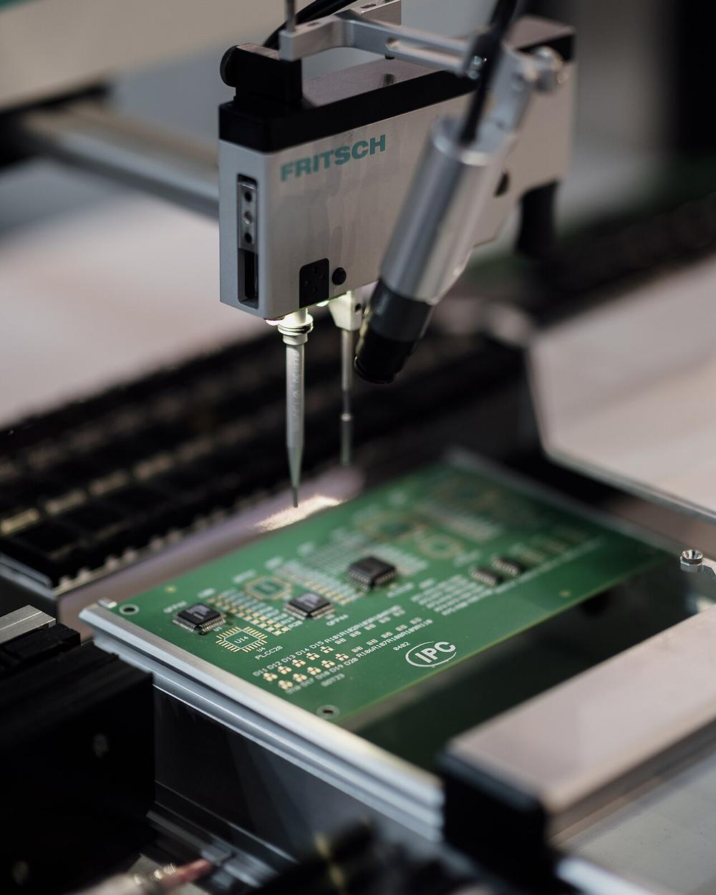
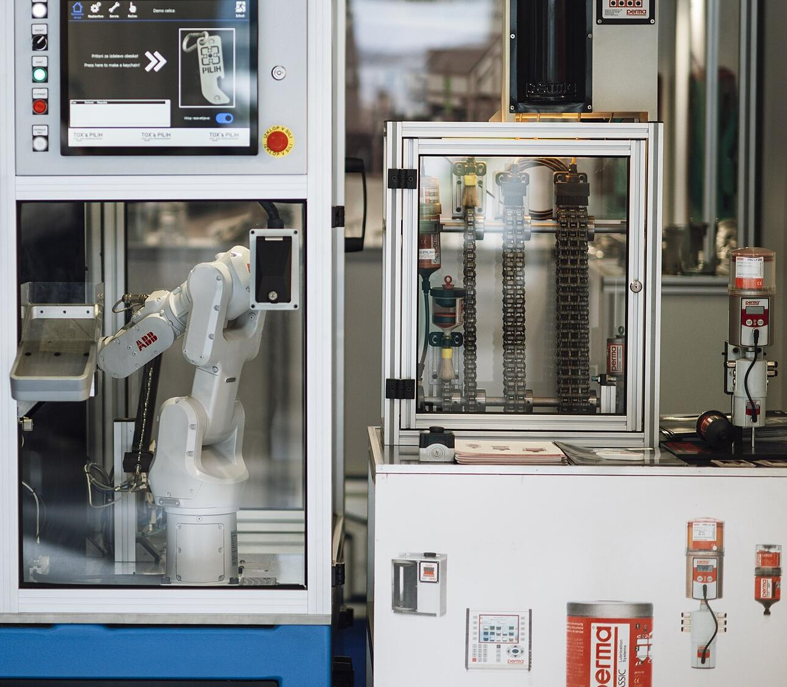

See the line before it stops.
A live digital twin of your plant, with AI that acts before the line does.
The best plants already run this way.
Siemens in Nanjing, Haier in Qingdao, Foxconn and the 238 Lighthouse factories chosen by the World Economic Forum run on live twins and AI.
Lead time at the Siemens electronics plant in Nanjing
Sources: Siemens, Haier and NVIDIA/Foxconn releases; World Economic Forum Global Lighthouse Network 2025–2026. 1 McKinsey & Company research on predictive maintenance. 2 Published studies of AI visual inspection against manual inspection. Results depend on the starting point.
Four layers on the machines you already own.
Nothing is replaced. Digital Factory sits on top of the equipment, MES and ERP the plant already runs.

Connect every signal.
PLCs, SMD equipment, AOI and SPI, testers, energy meters and the MES stream into one place over open industrial standards. We start read-only, so production is never touched.
See the whole plant live.
Every line, station and unit, updated every second. One shared picture for operators, engineers and management, on screens and on mobile.
Predict what comes next.
Machine-health models forecast failures days ahead. Vision AI inspects every board. Root-cause models link each defect to the step that caused it.
Act on the best decision.
Actions ranked by their value in EGP, work orders raised for you, and a copilot that answers questions about the plant in plain language.
The industry set 2030. Plant EG-01 can be ready first.
Leading global electronics makers have announced that their factories will be AI-driven by 2030: a digital twin across the value chain, AI agents for quality, production and logistics, safety AI and robotics. Digital Factory puts these pillars to work on one Plant EG-01 line, starting this quarter.
- March 2026Leading electronics makers commit to AI-driven factories
- This quarterPilot on one Plant EG-01 line (proposed)
- 2030AI-driven factories become the industry norm
Source: public 2026 announcements by leading global electronics manufacturers on AI-driven factories by 2030.

Machine-health models hear a mounter bearing wearing out days ahead. The repair goes into a planned 25-minute stop instead of a 4.5-hour breakdown.
Fix it before it breaks.
When a machine stops, dozens of alarms fire at once. The AI groups them into one incident, names the root cause and suggests the fix.
One cause, not fifty alarms.
Every recommendation carries its value in Egyptian pounds and its risk, so the morning meeting starts with the decision that matters most.
Decide in pounds, not percent.
Ten capabilities you can open now.
Each runs on Plant EG-01, a simulated TV plant. In production, each connects to the real equipment.

- Live plant in 3DA whole TV plant running: six main lines and every line that feeds them, the stores, milk runs and docks in 3D, with SAP, GMES, S&OP, MRP and every department on the same numbers. Nine AI agents simulate every option before they recommend one; every machine can be controlled behind its interlocks. Select any TV to read its passport.
- ShowroomThe QLED 65 the plant builds, in a product studio with physically based metal, glass and fabric, six looks from realistic to anime, and a path-traced still. Beside it, a 2D motion studio for the brand reel.
- Command roomAll six main lines and every line, store and vehicle feeding them, live, with alarms, decisions and the agent crew on one screen.
- AI agent crewNine agents for maintenance, quality, scheduling, material, logistics, energy, people, service and safety. You set how much each may do alone.
- Alarms to one causeAlarms grouped by area under their likely first-out, linked to the decision that fixes the cause.
- Shift forecastThe chance of hitting today's plan from a two-hour forecast of the six main lines and everything that feeds them, with the remaining life of every machine that wears.
- Root-cause chainsFrom symptom to cause to cost in one picture, with the evidence behind it.
- Time machineReplay machine states, vehicles and readouts of the last 45 minutes, then compare what to do from now.
- DrillsNine real-world drills: a worn mounter bearing, short shots, a coating oven drop, a faulty firmware release, a container held at port, a late carton truck, absent operators, field failures and a grid dip.
- Simulate before you actTVs packed and late orders against the live plan, simulated on a two-hour forecast before any change, with a full audit trail.
- Leadership viewPlant health score, value from decisions, and the decisions waiting with what each agent recommends.
Twelve weeks to a measured result.


Break a machine. Watch the AI respond
Opens the command room with nine real-world drills. Prefer the business case? See the 12-week plan.